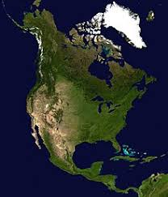

Се́верная Америка — один из шести материков планеты Земля, расположенный на севере Западного полушария Земли.
Площадь Северной Америки без островов — 20 360 000 км², с островами — 24 365 000 км². По этим показателям она сопоставима с Советским Союзом.
К островам Северной Америки относятся Гренландия (2,175 600 км²), Канадский Арктический архипелаг, Вест-Индия, Алеутские острова и другие.
Лаврентийская возвышенность соответствует материковой части Канадского щита. Особенности её рельефа связаны с длительной денудацией и ледниковой обработкой.
Полого-волнистая поверхность возвышенности имеет высоты 1537—6100 метров. Центральные равнины соответствуют части плиты Северо-Американской платформы.
Высота 200—500 м. Рельеф эрозионный и слабоволнистый, а в северной части рельеф ледниковый с моренными грядами и зандровыми полями. В южной части этого рельефа
находятся лесовые покровы. К таким возвышенностям относится возвышенность Озарк (высота около 760 м) и низкогорье Уошито (до 884 м), представляющее собой
складчатое основание эпигерцинской платформы.Великие равнины являются предгорным плато Кордильер. Высота 500—1500 м. Появились в эпоху ларамийской складчатости,
из-за накопления продуктов разрушения Кордильер и последующего поднятия поверхности. Геоморфологическое строение достаточно сложное, имеются коренные, моренные,
флювиогляциальные и лёссовые четвертичные породы.
Береговые низменности соответствуют эпигерцинской платформе на юге материка. Высота не выше 200 метров.
В тыловых частях множество эрозионных форм, в прибрежной зоне — бары, лагуны, песчаные пляжи, косы, плоские низкие террасы. Наивысшая точка Северной Америки —
гора Денали (до 2015 года называлась Мак-Кинли) — 6190 м, самая низкая — Долина Смерти — 86 м ниже уровня моря.
Климат от арктического на крайнем севере до субэкваториального в Центральной Америке и Вест-Индии, в прибрежных районах океанический, во внутренних
— континентальный. Средние температуры января возрастают от −36 °C (на севере Канадского Арктического арх.) до 20 °C (на юге Флориды и Мексиканского нагорья),
июля — от 4 °C на севере Канадского Арктического арх. до 32 °C на юго-западе США. Наибольшее количество осадков выпадает на Тихоокеанском побережье Аляски и
Канады и на северо-западе США (2000—3000 мм в год); юго-восточные районы материка получают 1000—1500 мм, Центральные равнины — 400—1200 мм, межгорные долины
субтропических и тропических районов Кордильер — 100—200 мм. К северу от 40—44° с. ш. зимой формируется устойчивый снежный покров. Лето тёплое, с редкими ливнями,
засухами и суховеями.